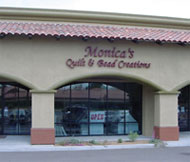
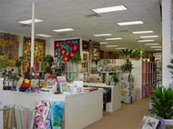
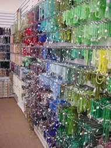

Address
77780 Country Club DrivePalm Desert, California 92211
Telephone
(760)772-2400Hours
Mon to Sat: 9:30am to 5:30pm Sunday: 11:00am to 4pm
Website
www.monicasquiltandbead.com


Monica's Quilt and Bead
We are a complete quilting and beading store, drawing people from all around North America. Located in the heart of the desert floor between Palm Springs and La Quinta, California, our nearly four thousand square foot store is a destination for quilters and beaders in search of unique and fabulous fabrics, beads, education and inspiration. Whether you are a traditionalist or like to push the envelope with your quilting and beading skills, we have something for you.
Map & Directions
View Larger Map
- Home
- Prize Winners
- Webmaster
- © Southern California Quilters Run 2016-17